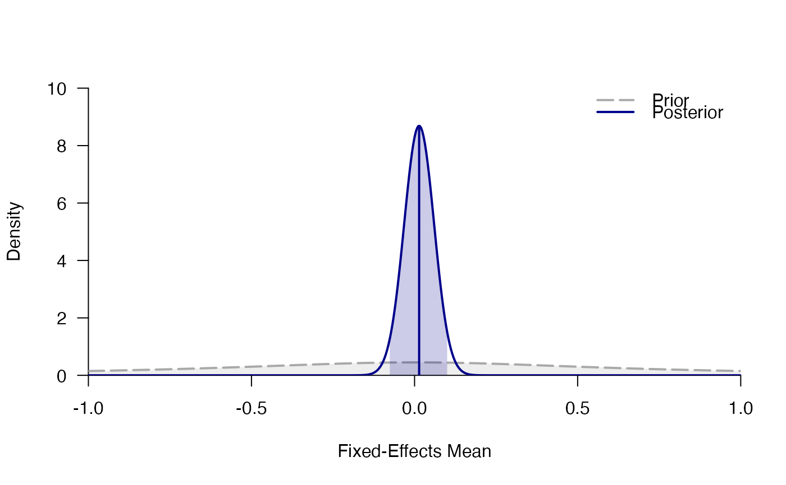

Preregistered replication (Wagenmakers et al., 2016) that investigated the facial feedback hypothesis (Strack, Martin, & Stepper, 1988).
facial_feedbackA data frame with three variables:
studyAuthors of original study (see Wagenmakers et. al, 2016)
dMeasure of effect size: Cohen's d (difference between smile vs. pout condition)
SEMeasure of precision: standard error of Cohen's d
The facial-feedback hypothesis states that people's affective responses can be influenced by their own facial expression (e.g., smiling, pouting), even when their expression did not result from their emotional experiences (Strack, Martin, & Stepper, 1988).
Strack, F., Martin, L. L., & Stepper, S. (1988). Inhibiting and facilitating conditions of the human smile: A nonobtrusive test of the facial feedback hypothesis. Journal of Personality and Social Psychology, 54, 768–777. doi:10.1037/0022-3514.54.5.768
Wagenmakers, E.-J., Beek, T., Dijkhoff, L., Gronau, Q. F., Acosta, A., Adams, R. B., ... Zwaan, R. A. (2016). Registered replication report: Strack, Martin, & Stepper (1988). Perspectives on Psychological Science, 11, 917-928. doi:10.1177/1745691616674458
data(facial_feedback)
head(facial_feedback)
#> study d SE
#> 1 Albohn 0.08653675 0.1698270
#> 2 Allard 0.09400435 0.1802856
#> 3 Benning -0.01189057 0.1865097
#> 4 Bulnes 0.08627924 0.1991098
#> 5 Capaldi -0.07138790 0.1849657
#> 6 Chasten -0.03595617 0.2063009
mf <- meta_fixed(d, SE, study, facial_feedback)
mf
#> ### Bayesian Fixed-Effects Meta-Analysis ###
#> Prior on d: 't' (location=0, scale=0.707, nu=1) with support on the interval [-Inf,Inf].
#>
#> # Bayes factors:
#> (denominator)
#> (numerator) fixed_H0 fixed_H1
#> fixed_H0 1.0000 18.4
#> fixed_H1 0.0543 1.0
#>
#> # Posterior summary statistics of fixed-effects model:
#> mean sd 2.5% 50% 97.5% hpd95_lower hpd95_upper n_eff Rhat
#> d 0.014 0.046 -0.076 0.014 0.104 -0.077 0.103 NA NA
plot_posterior(mf)
